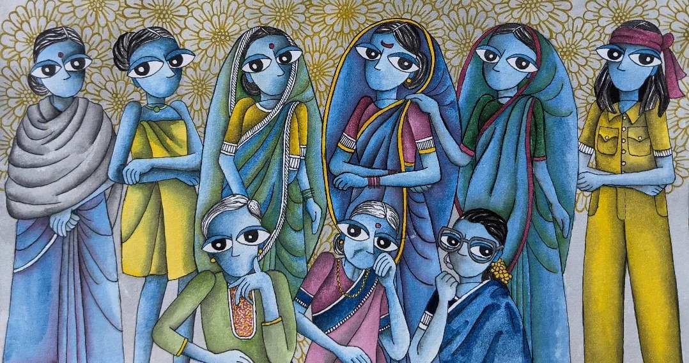

About us
SARA institute is a tribute to Savitrimai Phule and Ramamai Ambedkar. We provide free data science, research, and English education to Dalit, Adivasi, and Bahujan students in India.
Every year, we aim to teach around thirty students. Our courses help students to land their first data science job or avail scholarship for higher studies.

Meet our Team
Dr. Ajay Koli, PhD | Founder and Executive Director |
“Cultivation of mind should be the ultimate aim of human existence.” - Babasaheb Dr. B. R. Ambedkar
I’m a first-generation Ph.D. academic from a Scheduled Caste (SC) in India. Savitribai Ramabai Institute of Data Science (SARA Institute) is my initiative to take data science education to underrepresented students in India. I use R & RStudio to teach data science. I am sincerely trying to make teaching and learning data science less painful.
The purpose of education is to awaken the people. An awakening towards a sense of agency to agitate for a dignified life facilitates organizing against injustice. I teach Research Methodology (RM) and Data Science (DS) with the same spirit that enables my students to practice and apply their classroom learning to better understand and evaluate both the day-to-day, as well as real-world challenges like climate change, casteism, and racism.
For me, teaching is a process of sheer joy, learning, and debate. I prepare my lectures in such a way that my excitement about the topic is quickly shared by the students as well which makes learning new things less intimidating. Before starting a new topic, I prefer to take quick feedback from the students about the previous lectures. I also summarize previous topics and share with students an outline of the present lecture and where it fits in the course. This helps students to prepare themselves for the lecture ahead.
During my teaching experience, I realized some students hesitate to speak up in the classroom setting. Hence, I give them enough time to develop a connection with the course. I always welcome them to email me or meet me during office hours. I know the importance of education, classroom integrity, and respectful professional relationships. I always make sure no direct or indirect discrimination is experienced by any student due to their gender, color, religion, or caste. Before leaving the lecture hall, I ensure the satisfaction of work myself and a smile for my students who are looking forward to the next teaching session with curiosity.
Dr. Kiran Koli, PhD | Co-Founder and Director |
Qualifications:
Ph. D (Dairy Chemistry): ICAR-National Dairy Research Institute, Karnal, Haryana
M. Sc (Food Technology): Guru Jambheshwar University of Science & Technology, Hisar, Haryana
ASRB - NET qualified
Dr. Kiran Lata has more than 3 year of teaching experience in various subjects of Food Technology at graduation as well as post-graduation level. She has supervised UG and PG students in their major dissertation projects also. She has a good publications in peer-reviewed journals. Two years’ research experience in projects from National Dairy Research Institute, Karnal. She is presently working as Faculty in Department of Food Processing and Technology, SoVSAS, Gautam Buddha University, Greater Noida, Uttar Pradesh.
Awards:
First Best Research Paper for Development of Competitive Indirect Enzyme-linked Immunosorbent Assay for Detection of Cephalexin Residues in Milk, 2017 Published in Indian Journal of Dairy Science awarded by Indian Dairy Association (47th Dairy Industry Conference).
Best Paper - Review Article for Status of Antibiotic Residues in Milk –A Systematic Review Published in Indian Journal of Dairy and Biosciences, 2016 awarded by ICAR- NDRI (Bengaluru).
Best Poster award for Design of Lateral Flow Assay for detection of Oxytetracyline in milk 2015 by ICAR-NDRI (Karnal) XII- Agricultural Science Congress.